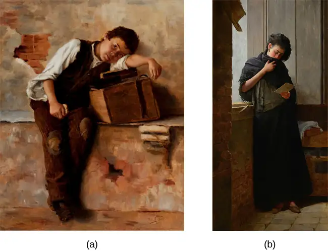
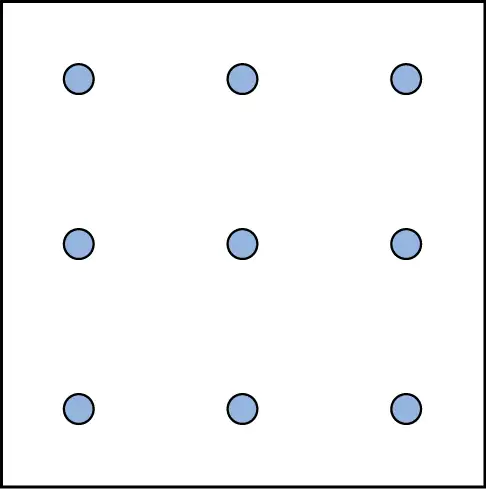
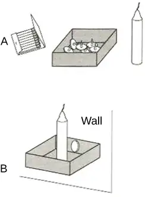
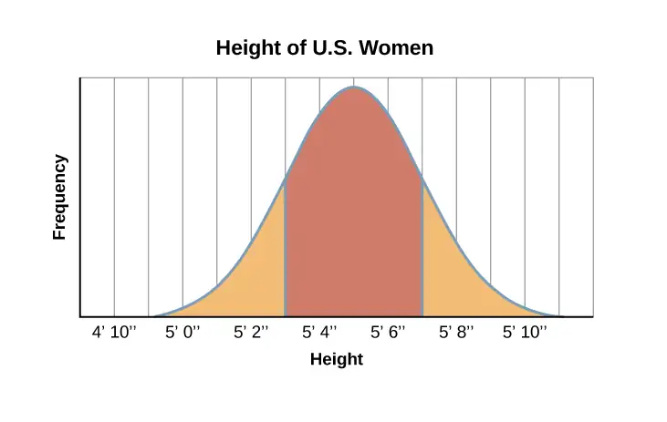
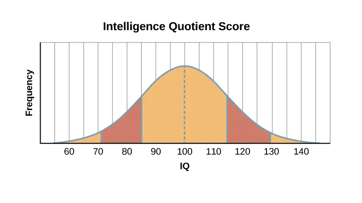
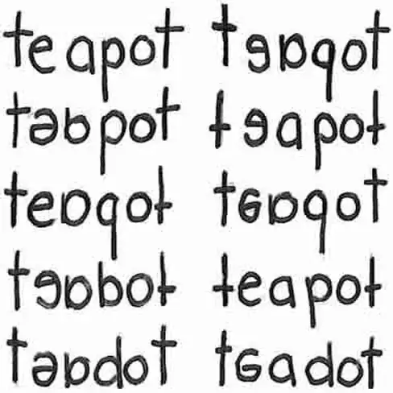

Chapter 7: Thinking and Intelligence¶
Introduction¶
What is the best way to solve a problem? How does a person who has never seen or touched snow in real life develop an understanding of the concept of snow? How do young children acquire the ability to learn language with no formal instruction? Psychologists who study thinking explore questions like these and are called cognitive psychologists.
Cognitive psychologists also study intelligence. What is intelligence, and how does it vary from person to person? Are “street smarts” a kind of intelligence, and if so, how do they relate to other types of intelligence? What does an IQ test really measure? These questions and more will be explored in this chapter as you study thinking and intelligence.
In other chapters, we discussed the cognitive processes of perception, learning, and memory. In this chapter, we will focus on high-level cognitive processes. As a part of this discussion, we will consider thinking and briefly explore the development and use of language. We will also discuss problem solving and creativity before ending with a discussion of how intelligence is measured and how our biology and environments interact to affect intelligence. After finishing this chapter, you will have a greater appreciation of the higher-level cognitive processes that contribute to our distinctiveness as a species.
7.1 What Is Cognition?¶
Learning Objectives
By the end of this section, you will be able to:
- Describe cognition
- Distinguish concepts and prototypes
- Explain the difference between natural and artificial concepts
- Describe how schemata are organized and constructed
Imagine all of your thoughts as if they were physical entities, swirling rapidly inside your mind. How is it possible that the brain is able to move from one thought to the next in an organized, orderly fashion? The brain is endlessly perceiving, processing, planning, organizing, and remembering—it is always active. Yet, you don’t notice most of your brain’s activity as you move throughout your daily routine. This is only one facet of the complex processes involved in cognition. Simply put, cognition is thinking, and it encompasses the processes associated with perception, knowledge, problem solving, judgment, language, and memory. Scientists who study cognition are searching for ways to understand how we integrate, organize, and utilize our conscious cognitive experiences without being aware of all of the unconscious work that our brains are doing (for example, Kahneman, 2011).
Cognition¶
Upon waking each morning, you begin thinking—contemplating the tasks that you must complete that day. In what order should you run your errands? Should you go to the bank, the cleaners, or the grocery store first? Can you get these things done before you head to class or will they need to wait until school is done? These thoughts are one example of cognition at work. Exceptionally complex, cognition is an essential feature of human consciousness, yet not all aspects of cognition are consciously experienced.
Cognitive psychology is the field of psychology dedicated to examining how people think. It attempts to explain how and why we think the way we do by studying the interactions among human thinking, emotion, creativity, language, and problem solving, in addition to other cognitive processes. Cognitive psychologists strive to determine and measure different types of intelligence, why some people are better at problem solving than others, and how emotional intelligence affects success in the workplace, among countless other topics. They also sometimes focus on how we organize thoughts and information gathered from our environments into meaningful categories of thought, which will be discussed later.
Concepts and Prototypes¶
The human nervous system is capable of handling endless streams of information. The senses serve as the interface between the mind and the external environment, receiving stimuli and translating it into nervous impulses that are transmitted to the brain. The brain then processes this information and uses the relevant pieces to create thoughts, which can then be expressed through language or stored in memory for future use. To make this process more complex, the brain does not gather information from external environments only. When thoughts are formed, the mind synthesizes information from emotions and memories (Figure 7.2). Emotion and memory are powerful influences on both our thoughts and behaviors.
![The outline of a human head is shown. There is a box containing “Information, sensations” in front of the head. An arrow from this box points to another box containing “Emotions, memories” located where the front of the person's brain would be. An arrow from this second box points to a third box containing “Thoughts” located where the back of the person's brain would be. There are two arrows coming from “Thoughts.” One arrow points back to the second box, “Emotions, memories,” and the other arrow points to a fourth box, “Behavior.”](img/cnx-psych-07-01-concepts.webp)
In order to organize this staggering amount of information, the mind has developed a "file cabinet" of sorts. The different files stored in the file cabinet are called concepts. Concepts are categories or groupings of linguistic information, images, ideas, or memories, such as life experiences. Concepts are, in many ways, big ideas that are generated by observing details, and categorizing and combining these details into cognitive structures. You use concepts to see the relationships among the different elements of your experiences and to keep the information in your mind organized and accessible.
Concepts are informed by our semantic memory (you will learn more about semantic memory in a later chapter) and are present in every aspect of our lives; however, one of the easiest places to notice concepts is inside a classroom, where they are discussed explicitly. When you study United States history, for example, you learn about more than just individual events that have happened in America’s past. You absorb a large quantity of information by listening to and participating in discussions, examining maps, and reading first-hand accounts of people’s lives. Your brain analyzes these details and develops an overall understanding of American history. In the process, your brain gathers details that inform and refine your understanding of related concepts such as war, the judicial system, and voting rights and laws.
Concepts can be complex and abstract, like justice, or more concrete, like types of birds. In psychology, for example, Piaget’s stages of development are abstract concepts. Some concepts, like tolerance, are agreed upon by many people, because they have been used in various ways over many years. Other concepts, like the characteristics of your ideal friend or your family’s birthday traditions, are personal and individualized. In this way, concepts touch every aspect of our lives, from our many daily routines to the guiding principles behind the way governments function.
Another technique used by your brain to organize information is the identification of prototypes for the concepts you have developed. A prototype is the best example or representation of a concept. For example, what comes to your mind when you think of a dog? Most likely your early experiences with dogs will shape what you imagine. If your first pet was a Golden Retriever, there is a good chance that this would be your prototype for the category of dogs.
Natural and Artificial Concepts¶
In psychology, concepts can be divided into two categories, natural and artificial. Natural concepts are created “naturally” through your experiences and can be developed from either direct or indirect experiences. For example, if you live in Essex Junction, Vermont, you have probably had a lot of direct experience with snow. You’ve watched it fall from the sky, you’ve seen lightly falling snow that barely covers the windshield of your car, and you’ve shoveled out 18 inches of fluffy white snow as you’ve thought, “This is perfect for skiing.” You’ve thrown snowballs at your best friend and gone sledding down the steepest hill in town. In short, you know snow. You know what it looks like, smells like, tastes like, and feels like. If, however, you’ve lived your whole life on the island of Saint Vincent in the Caribbean, you may never actually have seen snow, much less tasted, smelled, or touched it. You know snow from the indirect experience of seeing pictures of falling snow—or from watching films that feature snow as part of the setting. Either way, snow is a natural concept because you can construct an understanding of it through direct observations, experiences with snow, or indirect knowledge (such as from films or books) (Figure 7.3).
An artificial concept, on the other hand, is a concept that is defined by a specific set of characteristics. Various properties of geometric shapes, like squares and triangles, serve as useful examples of artificial concepts. A triangle always has three angles and three sides. A square always has four equal sides and four right angles. Mathematical formulas, like the equation for area (length × width) are artificial concepts defined by specific sets of characteristics that are always the same. Artificial concepts can enhance the understanding of a topic by building on one another. For example, before learning the concept of “area of a square” (and the formula to find it), you must understand what a square is. Once the concept of “area of a square” is understood, an understanding of area for other geometric shapes can be built upon the original understanding of area. The use of artificial concepts to define an idea is crucial to communicating with others and engaging in complex thought. According to Goldstone and Kersten (2003), concepts act as building blocks and can be connected in countless combinations to create complex thoughts.
Schemata¶
A schema is a mental construct consisting of a cluster or collection of related concepts (Bartlett, 1932). There are many different types of schemata, and they all have one thing in common: schemata are a method of organizing information that allows the brain to work more efficiently. When a schema is activated, the brain makes immediate assumptions about the person or object being observed.
There are several types of schemata. A role schema makes assumptions about how individuals in certain roles will behave (Callero, 1994). For example, imagine you meet someone who introduces himself as a firefighter. When this happens, your brain automatically activates the “firefighter schema” and begins making assumptions that this person is brave, selfless, and community-oriented. Despite not knowing this person, already you have unknowingly made judgments about them. Schemata also help you fill in gaps in the information you receive from the world around you. While schemata allow for more efficient information processing, there can be problems with schemata, regardless of whether they are accurate: Perhaps this particular firefighter is not brave, they just work as a firefighter to pay the bills while studying to become a children’s librarian.
An event schema, also known as a cognitive script, is a set of behaviors that can feel like a routine. Think about what you do when you walk into an elevator (Figure 7.4). First, the doors open and you wait to let exiting passengers leave the elevator car. Then, you step into the elevator and turn around to face the doors, looking for the correct button to push. You never face the back of the elevator, do you? And when you’re riding in a crowded elevator and you can’t face the front, it feels uncomfortable, doesn’t it? Interestingly, event schemata can vary widely among different cultures and countries. For example, while it is quite common for people to greet one another with a handshake in the United States, in Tibet, you greet someone by sticking your tongue out at them, and in Belize, you bump fists (Cairns Regional Council, n.d.)
Because event schemata are automatic, they can be difficult to change. Imagine that you are driving home from work or school. This event schema involves getting in the car, shutting the door, and buckling your seatbelt before putting the key in the ignition. You might perform this script two or three times each day. As you drive home, you hear your phone’s ring tone. Typically, the event schema that occurs when you hear your phone ringing involves locating the phone and answering it or responding to your latest text message. So without thinking, you reach for your phone, which could be in your pocket, in your bag, or on the passenger seat of the car. This powerful event schema is informed by your pattern of behavior and the pleasurable stimulation that a phone call or text message gives your brain. Because it is a schema, it is extremely challenging for us to stop reaching for the phone, even though we know that we endanger our own lives and the lives of others while we do it (Neyfakh, 2013) (Figure 7.5).
Remember the elevator? It feels almost impossible to walk in and not face the door. Our powerful event schema dictates our behavior in the elevator, and it is no different with our phones. Current research suggests that it is the habit, or event schema, of checking our phones in many different situations that makes refraining from checking them while driving especially difficult (Bayer & Campbell, 2012). Because texting and driving has become a dangerous epidemic in recent years, psychologists are looking at ways to help people interrupt the “phone schema” while driving. Event schemata like these are the reason why many habits are difficult to break once they have been acquired. As we continue to examine thinking, keep in mind how powerful the forces of concepts and schemata are to our understanding of the world.
7.2 Language¶
Learning Objectives
By the end of this section, you will be able to:
- Define language and demonstrate familiarity with the components of language
- Understand the development of language
- Explain the relationship between language and thinking
Language is a communication system that involves using words and systematic rules to organize those words to transmit information from one individual to another. While language is a form of communication, not all communication is language. Many species communicate with one another through their postures, movements, odors, or vocalizations. This communication is crucial for species that need to interact and develop social relationships with their conspecifics. However, many people have asserted that it is language that makes humans unique among all of the animal species (Corballis & Suddendorf, 2007; Tomasello & Rakoczy, 2003). This section will focus on what distinguishes language as a special form of communication, how the use of language develops, and how language affects the way we think.
Components of Language¶
Language, be it spoken, signed, or written, has specific components: a lexicon and grammar. Lexicon refers to the words of a given language. Thus, lexicon is a language’s vocabulary. Grammar refers to the set of rules that are used to convey meaning through the use of the lexicon (Fernández & Cairns, 2011). For instance, English grammar dictates that most verbs receive an “-ed” at the end to indicate past tense.
Words are formed by combining the various phonemes that make up the language. A phoneme (e.g., the sounds “ah” vs. “eh”) is a basic sound unit of a given language, and different languages have different sets of phonemes. Phonemes are combined to form morphemes, which are the smallest units of language that convey some type of meaning (e.g., “I” is both a phoneme and a morpheme). We use semantics and syntax to construct language. Semantics and syntax are part of a language’s grammar. Semantics refers to the process by which we derive meaning from morphemes and words. Syntax refers to the way words are organized into sentences (Chomsky, 1965; Fernández & Cairns, 2011).
We apply the rules of grammar to organize the lexicon in novel and creative ways, which allow us to communicate information about both concrete and abstract concepts. We can talk about our immediate and observable surroundings as well as the surface of unseen planets. We can share our innermost thoughts, our plans for the future, and debate the value of a college education. We can provide detailed instructions for cooking a meal, fixing a car, or building a fire. Through our use of words and language, we are able to form, organize, and express schemata, and artificial concepts.
Language Development¶
Given the remarkable complexity of a language, one might expect that mastering a language would be an especially arduous task; indeed, for those of us trying to learn a second language as adults, this might seem to be true. However, young children master language very quickly with relative ease. B. F. Skinner (1957) proposed that language is learned through reinforcement. Noam Chomsky (1965) criticized this behaviorist approach, asserting instead that the mechanisms underlying language acquisition are biologically determined. The use of language develops in the absence of formal instruction and appears to follow a very similar pattern in children from vastly different cultures and backgrounds. It would seem, therefore, that we are born with a biological predisposition to acquire a language (Chomsky, 1965; Fernández & Cairns, 2011). Moreover, it appears that there is a critical period for language acquisition, such that this proficiency at acquiring language is maximal early in life; generally, as people age, the ease with which they acquire and master new languages diminishes (Johnson & Newport, 1989; Lenneberg, 1967; Singleton, 1995).
Children begin to learn about language from a very early age (Table 7.1). In fact, it appears that this is occurring even before we are born. Newborns show preference for their mother’s voice and appear to be able to discriminate between the language spoken by their mother and other languages. Babies are also attuned to the languages being used around them and show preferences for videos of faces that are moving in synchrony with the audio of spoken language versus videos that do not synchronize with the audio (Blossom & Morgan, 2006; Pickens, 1994; Spelke & Cortelyou, 1981).
Table 7.1
| Stages of Language and Communication Development | ||
|---|---|---|
| Stage | Age | Developmental Language and Communication |
| 1 | 0–3 months | Reflexive communication |
| 2 | 3–8 months | Reflexive communication; interest in others |
| 3 | 8–13 months | Intentional communication; sociability |
| 4 | 12–18 months | First words |
| 5 | 18–24 months | Simple sentences of two words |
| 6 | 2–3 years | Sentences of three or more words |
| 7 | 3–5 years | Complex sentences; has conversations |
Dig Deeper: The Case of Genie
In the fall of 1970, a social worker in the Los Angeles area found a 13-year-old girl who was being raised in extremely neglectful and abusive conditions. The girl, who came to be known as Genie, had lived most of her life tied to a potty chair or confined to a crib in a small room that was kept closed with the curtains drawn. For a little over a decade, Genie had virtually no social interaction and no access to the outside world. As a result of these conditions, Genie was unable to stand up, chew solid food, or speak (Fromkin, Krashen, Curtiss, Rigler, & Rigler, 1974; Rymer, 1993). The police took Genie into protective custody.
Genie’s abilities improved dramatically following her removal from her abusive environment, and early on, it appeared she was acquiring language—much later than would be predicted by critical period hypotheses that had been posited at the time (Fromkin et al., 1974). Genie managed to amass an impressive vocabulary in a relatively short amount of time. However, she never developed a mastery of the grammatical aspects of language (Curtiss, 1981). Perhaps being deprived of the opportunity to learn language during a critical period impeded Genie’s ability to fully acquire and use language.
You may recall that each language has its own set of phonemes that are used to generate morphemes, words, and so on. Babies can discriminate among the sounds that make up a language (for example, they can tell the difference between the “s” in vision and the “sh” in dishes); early on, they can differentiate between the sounds of all human languages, even those that do not occur in the languages that are used in their environments. However, by the time that they are about 1 year old, they can only discriminate among those phonemes that are used in the language or languages in their environments (Jensen, 2011; Werker & Lalonde, 1988; Werker & Tees, 1984).
Link to Learning
Watch this video about how babies lose the ability to discriminate among all possible human phonemes as they age to learn more.
After the first few months of life, babies enter what is known as the babbling stage, during which time they tend to produce single syllables that are repeated over and over. As time passes, more variations appear in the syllables that they produce. During this time, it is unlikely that the babies are trying to communicate; they are just as likely to babble when they are alone as when they are with their caregivers (Fernández & Cairns, 2011). Interestingly, babies who are raised in environments in which sign language is used will also begin to show babbling in the gestures of their hands during this stage (Petitto, Holowka, Sergio, Levy, & Ostry, 2004).
Generally, a child’s first word is uttered sometime between the ages of 1 year to 18 months, and for the next few months, the child will remain in the “one word” stage of language development. During this time, children know a number of words, but they only produce one-word utterances. The child’s early vocabulary is limited to familiar objects or events, often nouns. Although children in this stage only make one-word utterances, these words often carry larger meaning (Fernández & Cairns, 2011). So, for example, a child saying “cookie” could be identifying a cookie or asking for a cookie.
As a child’s lexicon grows, they begin to utter simple sentences and to acquire new vocabulary at a very rapid pace. In addition, children begin to demonstrate a clear understanding of the specific rules that apply to their language(s). Even the mistakes that children sometimes make provide evidence of just how much they understand about those rules. This is sometimes seen in the form of overgeneralization. In this context, overgeneralization refers to an extension of a language rule to an exception to the rule. For example, in English, it is usually the case that an “s” is added to the end of a word to indicate plurality. For example, we speak of one dog versus two dogs. Young children will overgeneralize this rule to cases that are exceptions to the “add an s to the end of the word” rule and say things like “those two gooses” or “three mouses.” Clearly, the rules of the language are understood, even if the exceptions to the rules are still being learned (Moskowitz, 1978).
Language and Thought¶
When we speak one language, we agree that words are representations of ideas, people, places, and events. The given language that children learn is connected to their culture and surroundings. But can words themselves shape the way we think about things? Psychologists have long investigated the question of whether language shapes thoughts and actions, or whether our thoughts and beliefs shape our language. Two researchers, Edward Sapir and Benjamin Lee Whorf, began this investigation in the 1940s. They wanted to understand how the language habits of a community encourage members of that community to interpret language in a particular manner (Sapir, 1941/1964). Sapir and Whorf proposed that language determines thought. For example, in some languages there are many different words for love. However, in English we use the word love for all types of love. Does this affect how we think about love depending on the language that we speak (Whorf, 1956)? Researchers have since identified this view as too absolute, pointing out a lack of empiricism behind what Sapir and Whorf proposed (Abler, 2013; Boroditsky, 2011; van Troyer, 1994). Today, psychologists continue to study and debate the relationship between language and thought.
What Do You Think?: The Meaning of Language
Think about what you know of other languages; perhaps you even speak multiple languages. Imagine for a moment that your closest friend fluently speaks more than one language. Do you think that friend thinks differently, depending on which language is being spoken? You may know a few words that are not translatable from their original language into English. For example, the Portuguese word saudade originated during the 15th century, when Portuguese sailors left home to explore the seas and travel to Africa or Asia. Those left behind described the emptiness and fondness they felt as saudade (Figure 7.6). The word came to express many meanings, including loss, nostalgia, yearning, warm memories, and hope. There is no single word in English that includes all of those emotions in a single description. Do words such as saudade indicate that different languages produce different patterns of thought in people? What do you think??

Language may indeed influence the way that we think, an idea known as linguistic determinism. One recent demonstration of this phenomenon involved differences in the way that English and Mandarin Chinese speakers talk and think about time. English speakers tend to talk about time using terms that describe changes along a horizontal dimension, for example, saying something like “I’m running behind schedule” or “Don’t get ahead of yourself.” While Mandarin Chinese speakers also describe time in horizontal terms, it is not uncommon to also use terms associated with a vertical arrangement. For example, the past might be described as being “up” and the future as being “down.” It turns out that these differences in language translate into differences in performance on cognitive tests designed to measure how quickly an individual can recognize temporal relationships. Specifically, when given a series of tasks with vertical priming, Mandarin Chinese speakers were faster at recognizing temporal relationships between months. Indeed, Boroditsky (2001) sees these results as suggesting that “habits in language encourage habits in thought” (p. 12).
One group of researchers who wanted to investigate how language influences thought compared how English speakers and the Dani people of Papua New Guinea think and speak about color. The Dani have two words for color: one word for light and one word for dark. In contrast, the English language has 11 color words. Researchers hypothesized that the number of color terms could limit the ways that the Dani people conceptualized color. However, the Dani were able to distinguish colors with the same ability as English speakers, despite having fewer words at their disposal (Berlin & Kay, 1969). A recent review of research aimed at determining how language might affect something like color perception suggests that language can influence perceptual phenomena, especially in the left hemisphere of the brain. You may recall from earlier chapters that the left hemisphere is associated with language for most people. However, the right (less linguistic hemisphere) of the brain is less affected by linguistic influences on perception (Regier & Kay, 2009)
7.3 Problem Solving¶
Learning Objectives
By the end of this section, you will be able to:
- Describe problem solving strategies
- Define algorithm and heuristic
- Explain some common roadblocks to effective problem solving and decision making
People face problems every day—usually, multiple problems throughout the day. Sometimes these problems are straightforward: To double a recipe for pizza dough, for example, all that is required is that each ingredient in the recipe be doubled. Sometimes, however, the problems we encounter are more complex. For example, say you have a work deadline, and you must mail a printed copy of a report to your supervisor by the end of the business day. The report is time-sensitive and must be sent overnight. You finished the report last night, but your printer will not work today. What should you do? First, you need to identify the problem and then apply a strategy for solving the problem.
Problem-Solving Strategies¶
When you are presented with a problem—whether it is a complex mathematical problem or a broken printer, how do you solve it? Before finding a solution to the problem, the problem must first be clearly identified. After that, one of many problem solving strategies can be applied, hopefully resulting in a solution.
A problem-solving strategy is a plan of action used to find a solution. Different strategies have different action plans associated with them (Table 7.2). For example, a well-known strategy is trial and error. The old adage, “If at first you don’t succeed, try, try again” describes trial and error. In terms of your broken printer, you could try checking the ink levels, and if that doesn’t work, you could check to make sure the paper tray isn’t jammed. Or maybe the printer isn’t actually connected to your laptop. When using trial and error, you would continue to try different solutions until you solved your problem. Although trial and error is not typically one of the most time-efficient strategies, it is a commonly used one.
Table 7.2
| Problem-Solving Strategies | ||
|---|---|---|
| Method | Description | Example |
| Trial and error | Continue trying different solutions until problem is solved | Restarting phone, turning off WiFi, turning off bluetooth in order to determine why your phone is malfunctioning |
| Algorithm | Step-by-step problem-solving formula | Instructional video for installing new software on your computer |
| Heuristic | General problem-solving framework | Working backwards; breaking a task into steps |
Another type of strategy is an algorithm. An algorithm is a problem-solving formula that provides you with step-by-step instructions used to achieve a desired outcome (Kahneman, 2011). You can think of an algorithm as a recipe with highly detailed instructions that produce the same result every time they are performed. Algorithms are used frequently in our everyday lives, especially in computer science. When you run a search on the Internet, search engines like Google use algorithms to decide which entries will appear first in your list of results. Facebook also uses algorithms to decide which posts to display on your newsfeed. Can you identify other situations in which algorithms are used?
A heuristic is another type of problem solving strategy. While an algorithm must be followed exactly to produce a correct result, a heuristic is a general problem-solving framework (Tversky & Kahneman, 1974). You can think of these as mental shortcuts that are used to solve problems. A “rule of thumb” is an example of a heuristic. Such a rule saves the person time and energy when making a decision, but despite its time-saving characteristics, it is not always the best method for making a rational decision. Different types of heuristics are used in different types of situations, but the impulse to use a heuristic occurs when one of five conditions is met (Pratkanis, 1989):
- When one is faced with too much information
- When the time to make a decision is limited
- When the decision to be made is unimportant
- When there is access to very little information to use in making the decision
- When an appropriate heuristic happens to come to mind in the same moment
Working backwards is a useful heuristic in which you begin solving the problem by focusing on the end result. Consider this example: You live in Washington, D.C. and have been invited to a wedding at 4 PM on Saturday in Philadelphia. Knowing that Interstate 95 tends to back up any day of the week, you need to plan your route and time your departure accordingly. If you want to be at the wedding service by 3:30 PM, and it takes 2.5 hours to get to Philadelphia without traffic, what time should you leave your house? You use the working backwards heuristic to plan the events of your day on a regular basis, probably without even thinking about it.
Another useful heuristic is the practice of accomplishing a large goal or task by breaking it into a series of smaller steps. Students often use this common method to complete a large research project or long essay for school. For example, students typically brainstorm, develop a thesis or main topic, research the chosen topic, organize their information into an outline, write a rough draft, revise and edit the rough draft, develop a final draft, organize the references list, and proofread their work before turning in the project. The large task becomes less overwhelming when it is broken down into a series of small steps.
Everyday Connection: Solving Puzzles
Problem-solving abilities can improve with practice. Many people challenge themselves every day with puzzles and other mental exercises to sharpen their problem-solving skills. Sudoku puzzles appear daily in most newspapers. Typically, a sudoku puzzle is a 9×9 grid. The simple sudoku below (Figure 7.7) is a 4×4 grid. To solve the puzzle, fill in the empty boxes with a single digit: 1, 2, 3, or 4. Here are the rules: The numbers must total 10 in each bolded box, each row, and each column; however, each digit can only appear once in a bolded box, row, and column. Time yourself as you solve this puzzle and compare your time with a classmate.
![A four column by four row Sudoku puzzle is shown. The top left cell contains the number 3. The top right cell contains the number 2. The bottom right cell contains the number 1. The bottom left cell contains the number 4. The cell at the intersection of the second row and the second column contains the number 4. The cell to the right of that contains the number 1. The cell below the cell containing the number 1 contains the number 2. The cell to the left of the cell containing the number 2 contains the number 3.](img/cnx-psych-07-03-sudoko.webp)
Here is another popular type of puzzle (Figure 7.8) that challenges your spatial reasoning skills. Connect all nine dots with four connecting straight lines without lifting your pencil from the paper:

Take a look at the “Puzzling Scales” logic puzzle below (Figure 7.9). Sam Loyd, a well-known puzzle master, created and refined countless puzzles throughout his lifetime (Cyclopedia of Puzzles, n.d.).
![A puzzle involving a scale is shown. At the top of the figure it reads: “Sam Loyds Puzzling Scales.” The first row of the puzzle shows a balanced scale with 3 blocks and a top on the left and 12 marbles on the right. Below this row it reads: “Since the scales now balance.” The next row of the puzzle shows a balanced scale with just the top on the left, and 1 block and 8 marbles on the right. Below this row it reads: “And balance when arranged this way.” The third row shows an unbalanced scale with the top on the left side, which is much lower than the right side. The right side is empty. Below this row it reads: “Then how many marbles will it require to balance with that top?”](img/cnx-psych-07-03-samloyd.webp)
Pitfalls to Problem Solving¶
Not all problems are successfully solved, however. What challenges stop us from successfully solving a problem? Imagine a person in a room that has four doorways. One doorway that has always been open in the past is now locked. The person, accustomed to exiting the room by that particular doorway, keeps trying to get out through the same doorway even though the other three doorways are open. The person is stuck—but they just need to go to another doorway, instead of trying to get out through the locked doorway. A mental set is where you persist in approaching a problem in a way that has worked in the past but is clearly not working now.
Functional fixedness is a type of mental set where you cannot perceive an object being used for something other than what it was designed for. Duncker (1945) conducted foundational research on functional fixedness. He created an experiment in which participants were given a candle, a book of matches, and a box of thumbtacks. They were instructed to use those items to attach the candle to the wall so that it did not drip wax onto the table below. Participants had to use functional fixedness to overcome the problem (Figure 7.10). During the Apollo 13 mission to the moon, NASA engineers at Mission Control had to overcome functional fixedness to save the lives of the astronauts aboard the spacecraft. An explosion in a module of the spacecraft damaged multiple systems. The astronauts were in danger of being poisoned by rising levels of carbon dioxide because of problems with the carbon dioxide filters. The engineers found a way for the astronauts to use spare plastic bags, tape, and air hoses to create a makeshift air filter, which saved the lives of the astronauts.

Link to Learning
Check out this Apollo 13 scene about NASA engineers overcoming functional fixedness to learn more.
Researchers have investigated whether functional fixedness is affected by culture. In one experiment, individuals from the Shuar group in Ecuador were asked to use an object for a purpose other than that for which the object was originally intended. For example, the participants were told a story about a bear and a rabbit that were separated by a river and asked to select among various objects, including a spoon, a cup, erasers, and so on, to help the animals. The spoon was the only object long enough to span the imaginary river, but if the spoon was presented in a way that reflected its normal usage, it took participants longer to choose the spoon to solve the problem. (German & Barrett, 2005). The researchers wanted to know if exposure to highly specialized tools, as occurs with individuals in industrialized nations, affects their ability to transcend functional fixedness. It was determined that functional fixedness is experienced in both industrialized and nonindustrialized cultures (German & Barrett, 2005).
In order to make good decisions, we use our knowledge and our reasoning. Often, this knowledge and reasoning is sound and solid. Sometimes, however, we are swayed by biases or by others manipulating a situation. For example, let’s say you and three friends wanted to rent a house and had a combined target budget of $1,600. The realtor shows you only very run-down houses for $1,600 and then shows you a very nice house for $2,000. Might you ask each person to pay more in rent to get the $2,000 home? Why would the realtor show you the run-down houses and the nice house? The realtor may be challenging your anchoring bias. An anchoring bias occurs when you focus on one piece of information when making a decision or solving a problem. In this case, you’re so focused on the amount of money you are willing to spend that you may not recognize what kinds of houses are available at that price point.
The confirmation bias is the tendency to focus on information that confirms your existing beliefs. For example, if you think that your professor is not very nice, you notice all of the instances of rude behavior exhibited by the professor while ignoring the countless pleasant interactions he is involved in on a daily basis. Hindsight bias leads you to believe that the event you just experienced was predictable, even though it really wasn’t. In other words, you knew all along that things would turn out the way they did. Representative bias describes a faulty way of thinking, in which you make a decision or judgment based on your perception of the similarity of the person or thing to your existing stereotypes and prior beliefs; for example, you may assume that your professors spend their free time reading books and engaging in intellectual conversation, because the idea of them spending their time playing volleyball or visiting an amusement park does not fit in with your stereotypes of professors. In another example, an urgent care nurse may be more likely to efficiently detect a heart attack in a male patient rather than a female patient, due to the nurse's unintentional stereotype that heart attacks happen more often to males.
Finally, the availability heuristic is a heuristic in which you make a decision based on an example, information, or recent experience that is that readily available to you, even though it may not be the best example to inform your decision. Biases tend to “preserve that which is already established—to maintain our preexisting knowledge, beliefs, attitudes, and hypotheses” (Aronson, 1995; Kahneman, 2011). These biases are summarized in Table 7.3.
Table 7.3
| Summary of Decision Biases | |
|---|---|
| Bias | Description |
| Anchoring | Tendency to focus on one particular piece of information when making decisions or problem-solving |
| Confirmation | Focuses on information that confirms existing beliefs |
| Hindsight | Belief that the event just experienced was predictable |
| Representative | Making a decision or judgment based on perceived similarity to existing stereotypes or prior beliefs |
| Availability | Decision is based upon either an available precedent or an example that may be faulty |
Link to Learning
Watch this teacher-made music video about cognitive biases to learn more.
Were you able to determine how many marbles are needed to balance the scales in Figure 7.9? You need nine. Were you able to solve the problems in Figure 7.7 and Figure 7.8? Here are the answers (Figure 7.11).
![The first puzzle is a Sudoku grid of 16 squares (4 rows of 4 squares) is shown. Half of the numbers were supplied to start the puzzle and are colored blue, and half have been filled in as the puzzle’s solution and are colored red. The numbers in each row of the grid, left to right, are as follows. Row 1: blue 3, red 1, red 4, blue 2. Row 2: red 2, blue 4, blue 1, red 3. Row 3: red 1, blue 3, blue 2, red 4. Row 4: blue 4, red 2, red 3, blue 1.The second puzzle consists of 9 dots arranged in 3 rows of 3 inside of a square. The solution, four straight lines made without lifting the pencil, is shown in a red line with arrows indicating the direction of movement. In order to solve the puzzle, the lines must extend beyond the borders of the box. The four connecting lines are drawn as follows. Line 1 begins at the top left dot, proceeds through the middle and right dots of the top row, and extends to the right beyond the border of the square. Line 2 extends from the end of line 1, through the right dot of the horizontally centered row, through the middle dot of the bottom row, and beyond the square’s border ending in the space beneath the left dot of the bottom row. Line 3 extends from the end of line 2 upwards through the left dots of the bottom, middle, and top rows. Line 4 extends from the end of line 3 through the middle dot in the middle row and ends at the right dot of the bottom row.](img/cnx-psych-07-06-solutions.webp)
7.4 What Are Intelligence and Creativity?¶
Learning Objectives
By the end of this section, you will be able to:
- Define intelligence
- Explain the triarchic theory of intelligence
- Identify the difference between intelligence theories
- Explain emotional intelligence
- Define creativity
A four-and-a-half-year-old boy sits at the kitchen table with his father, who is reading a new story aloud to him. He turns the page to continue reading, but before he can begin, the boy says, “Wait, Daddy!” He points to the words on the new page and reads aloud, “Go, Pig! Go!” The father stops and looks at his son. “Can you read that?” he asks. “Yes, Daddy!” And he points to the words and reads again, “Go, Pig! Go!”
This father was not actively teaching his son to read, even though the child constantly asked questions about letters, words, and symbols that they saw everywhere: in the car, in the store, on the television. The dad wondered about what else his son might understand and decided to try an experiment. Grabbing a sheet of blank paper, he wrote several simple words in a list: mom, dad, dog, bird, bed, truck, car, tree. He put the list down in front of the boy and asked him to read the words. “Dad, dog, bird, bed, truck, car, tree,” he read, slowing down to carefully pronounce bird and truck. Then, “Did I do it, Daddy?” “You sure did! That is very good.” The father gave his little boy a warm hug and continued reading the story about the pig, all the while wondering if his son’s abilities were an indication of exceptional intelligence or simply a normal pattern of linguistic development. Like the father in this example, psychologists have wondered what constitutes intelligence and how it can be measured.
Classifying Intelligence¶
What exactly is intelligence? The way that researchers have defined the concept of intelligence has been modified many times since the birth of psychology. British psychologist Charles Spearman believed intelligence consisted of one general factor, called g, which could be measured and compared among individuals. Spearman focused on the commonalities among various intellectual abilities and de-emphasized what made each unique. Long before modern psychology developed, however, ancient philosophers, such as Aristotle, held a similar view (Cianciolo & Sternberg, 2004).
Other psychologists believe that instead of a single factor, intelligence is a collection of distinct abilities. In the 1940s, Raymond Cattell proposed a theory of intelligence that divided general intelligence into two components: crystallized intelligence and fluid intelligence (Cattell, 1963). Crystallized intelligence is characterized as acquired knowledge and the ability to retrieve it. When you learn, remember, and recall information, you are using crystallized intelligence. You use crystallized intelligence all the time in your coursework by demonstrating that you have mastered the information covered in the course. Fluid intelligence encompasses the ability to see complex relationships and solve problems. Navigating your way home after being detoured onto an unfamiliar route because of road construction would draw upon your fluid intelligence. Fluid intelligence helps you tackle complex, abstract challenges in your daily life, whereas crystallized intelligence helps you overcome concrete, straightforward problems (Cattell, 1963).
Other theorists and psychologists believe that intelligence should be defined in more practical terms. For example, what types of behaviors help you get ahead in life? Which skills promote success? Think about this for a moment. Being able to recite all of the presidents of the United States in order is an excellent party trick, but will knowing this make you a better person?
Robert Sternberg developed another theory of intelligence, which he titled the triarchic theory of intelligence because it sees intelligence as comprised of three parts (Sternberg, 1988): practical, creative, and analytical intelligence (Figure 7.12).
![Three boxes are arranged in a triangle. The top box contains “Analytical intelligence; academic problem solving and computation.” There is a line with arrows on both ends connecting this box to another box containing “Practical intelligence; street smarts and common sense.” Another line with arrows on both ends connects this box to another box containing “Creative intelligence; imaginative and innovative problem solving.” Another line with arrows on both ends connects this box to the first box described, completing the triangle.](img/cnx-psych-07-04-triachic.webp)
Practical intelligence, as proposed by Sternberg, is sometimes compared to “street smarts.” Being practical means you find solutions that work in your everyday life by applying knowledge based on your experiences. This type of intelligence appears to be separate from traditional understanding of IQ; individuals who score high in practical intelligence may or may not have comparable scores in creative and analytical intelligence (Sternberg, 1988).
Analytical intelligence is closely aligned with academic problem solving and computations. Sternberg says that analytical intelligence is demonstrated by an ability to analyze, evaluate, judge, compare, and contrast. When reading a classic novel for literature class, for example, it is usually necessary to compare the motives of the main characters of the book or analyze the historical context of the story. In a science course such as anatomy, you must study the processes by which the body uses various minerals in different human systems. In developing an understanding of this topic, you are using analytical intelligence. When solving a challenging math problem, you would apply analytical intelligence to analyze different aspects of the problem and then solve it section by section.
Creative intelligence is marked by inventing or imagining a solution to a problem or situation. Creativity in this realm can include finding a novel solution to an unexpected problem or producing a beautiful work of art or a well-developed short story. Imagine for a moment that you are camping in the woods with some friends and realize that you’ve forgotten your camp coffee pot. The person in your group who figures out a way to successfully brew coffee for everyone would be credited as having higher creative intelligence.
Multiple Intelligences Theory was developed by Howard Gardner, a Harvard psychologist and former student of Erik Erikson. In Gardner’s theory, each person possesses at least eight intelligences. The eight intelligences are linguistic intelligence, logical-mathematical intelligence, musical intelligence, bodily kinesthetic intelligence, spatial intelligence, interpersonal intelligence, intrapersonal intelligence, and naturalistic intelligence. Among cognitive psychologists, Gardner’s theory has been heavily criticized for lacking empirical evidence. However, educators continue to study and use Gardner’s theory, with some colleges even discussing how they integrate Gardner’s theory into their classrooms. Gottfredson describes one possible reason for the continued use of Gardner’s theory: “ . . . that there are multiple independent intelligences, suggesting that everyone can be smart in some way. This is, understandably, a very attractive idea in democratic societies” (2004).
Gardner’s inter- and intrapersonal intelligences are often combined into a single type: emotional intelligence. Emotional intelligence encompasses the ability to understand the emotions of yourself and others, show empathy, understand social relationships and cues, and regulate your own emotions and respond in culturally appropriate ways (Parker, Saklofske, & Stough, 2009). People with high emotional intelligence typically have well-developed social skills. Some researchers, including Daniel Goleman, the author of Emotional Intelligence: Why It Can Matter More than IQ, argue that emotional intelligence is a better predictor of success than traditional intelligence (Goleman, 1995). However, emotional intelligence has been widely debated, with researchers pointing out inconsistencies in how it is defined and described, as well as questioning results of studies on a subject that is difficult to measure and study empirically (Locke, 2005; Mayer, Salovey, & Caruso, 2004).
The most comprehensive theory of intelligence to date is the Cattell-Horn-Carroll (CHC) theory of cognitive abilities (Schneider & McGrew, 2018). In this theory, abilities are related and arranged in a hierarchy with general abilities at the top, broad abilities in the middle, and narrow (specific) abilities at the bottom. The narrow abilities are the only ones that can be directly measured; however, they are integrated within the other abilities. At the general level is general intelligence. Next, the broad level consists of general abilities such as fluid reasoning, short-term memory, and processing speed. Finally, as the hierarchy continues, the narrow level includes specific forms of cognitive abilities. For example, short-term memory would further break down into memory span and working memory capacity.
Intelligence can also have different meanings and values in different cultures. If you live on a small island, where most people get their food by fishing from boats, it would be important to know how to fish and how to repair a boat. If you were an exceptional angler, your peers would probably consider you intelligent. If you were also skilled at repairing boats, your intelligence might be known across the whole island. Think about your own family’s culture. What values are important for Latinx families? Italian families? In Irish families, hospitality and telling an entertaining story are marks of the culture. If you are a skilled storyteller, other members of Irish culture are likely to consider you intelligent.
Some cultures place a high value on working together as a collective. In these cultures, the importance of the group supersedes the importance of individual achievement. When you visit such a culture, how well you relate to the values of that culture exemplifies your cultural intelligence, sometimes referred to as cultural competence.
Link to Learning
Watch this video that compares different theories of intelligence to learn more.
Creativity¶
Creativity is the ability to generate, create, or discover new ideas, solutions, and possibilities. Very creative people often have intense knowledge about something, work on it for years, look at novel solutions, seek out the advice and help of other experts, and take risks. Although creativity is often associated with the arts, it is actually a vital form of intelligence that drives people in many disciplines to discover something new. Creativity can be found in every area of life, from the way you decorate your residence to a new way of understanding how a cell works.
Creativity is often connected to a person’s ability to engage in divergent thinking. Divergent thinking can be described as thinking “outside the box;” it allows an individual to arrive at unique, multiple solutions to a given problem. In contrast, convergent thinking describes the ability to provide a correct or well-established answer or solution to a problem (Cropley, 2006; Gilford, 1967)
Everyday Connection: Creativity
Dr. Tom Steitz, former Sterling Professor of Biochemistry and Biophysics at Yale University, spent his career looking at the structure and specific aspects of RNA molecules and how their interactions could help produce antibiotics and ward off diseases. As a result of his lifetime of work, he won the Nobel Prize in Chemistry in 2009. He wrote, “Looking back over the development and progress of my career in science, I am reminded how vitally important good mentorship is in the early stages of one's career development and constant face-to-face conversations, debate and discussions with colleagues at all stages of research. Outstanding discoveries, insights and developments do not happen in a vacuum” (Steitz, 2010, para. 39). Based on Steitz’s comment, it becomes clear that someone’s creativity, although an individual strength, benefits from interactions with others. Think of a time when your creativity was sparked by a conversation with a friend or classmate. How did that person influence you and what problem did you solve using creativity?
7.5 Measures of Intelligence¶
Learning Objectives
By the end of this section, you will be able to:
- Explain how intelligence tests are developed
- Describe the history of the use of IQ tests
- Describe the purposes and benefits of intelligence testing
While you’re likely familiar with the term “IQ” and associate it with the idea of intelligence, what does IQ really mean? IQ stands for intelligence quotient and describes a score earned on a test designed to measure intelligence. You’ve already learned that there are many ways psychologists describe intelligence (or more aptly, intelligences). Similarly, IQ tests—the tools designed to measure intelligence—have been the subject of debate throughout their development and use.
When might an IQ test be used? What do we learn from the results, and how might people use this information? While there are certainly many benefits to intelligence testing, it is important to also note the limitations and controversies surrounding these tests. For example, IQ tests have sometimes been used as arguments in support of insidious purposes, such as the eugenics movement (Severson, 2011). The infamous Supreme Court Case, Buck v. Bell, legalized the forced sterilization of some people deemed “feeble-minded” through this type of testing, resulting in about 65,000 sterilizations (Buck v. Bell, 274 U.S. 200; Ko, 2016). Today, only professionals trained in psychology can administer IQ tests, and the purchase of most tests requires an advanced degree in psychology. Other professionals in the field, such as social workers and psychiatrists, cannot administer IQ tests. In this section, we will explore what intelligence tests measure, how they are scored, and how they were developed.
Measuring Intelligence¶
It seems that the human understanding of intelligence is somewhat limited when we focus on traditional or academic-type intelligence. How then, can intelligence be measured? And when we measure intelligence, how do we ensure that we capture what we’re really trying to measure (in other words, that IQ tests function as valid measures of intelligence)? In the following paragraphs, we will explore how intelligence tests were developed and the history of their use.
The IQ test has been synonymous with intelligence for over a century. In the late 1800s, Sir Francis Galton developed the first broad test of intelligence (Flanagan & Kaufman, 2004). Although he was not a psychologist, his contributions to the concepts of intelligence testing are still felt today (Gordon, 1995). Reliable intelligence testing (you may recall from earlier chapters that reliability refers to a test’s ability to produce consistent results) began in earnest during the early 1900s with a researcher named Alfred Binet (Figure 7.13). Binet was asked by the French government to develop an intelligence test to use on children to determine which ones might have difficulty in school; it included many verbally based tasks. American researchers soon realized the value of such testing. Louis Terman, a Stanford professor, modified Binet’s work by standardizing the administration of the test and tested thousands of different-aged children to establish an average score for each age. As a result, the test was normed and standardized, which means that the test was administered consistently to a large enough representative sample of the population that the range of scores resulted in a bell curve (bell curves will be discussed later). Standardization means that the manner of administration, scoring, and interpretation of results is consistent. Norming involves giving a test to a large population so data can be collected comparing groups, such as age groups. The resulting data provide norms, or referential scores, by which to interpret future scores. Norms are not expectations of what a given group should know but a demonstration of what that group does know. Norming and standardizing the test ensures that new scores are reliable. This new version of the test was called the Stanford-Binet Intelligence Scale (Terman, 1916). Remarkably, an updated version of this test is still widely used today.
![Photograph A shows a portrait of Alfred Binet. Photograph B shows six sketches of human faces. Above these faces is the label “Guide for Binet-Simon Scale. 223” The faces are arranged in three rows of two, and these rows are labeled “1, 2, and 3.” At the bottom it reads: “The psychological clinic is indebted for the loan of these cuts and those on p. 225 to the courtesy of Dr. Oliver P. Cornman, Associate Superintendent of Schools of Philadelphia, and Chairman of Committee on Backward Children Investigation. See Report of Committee, Dec. 31, 1910, appendix.”](img/cnx-psych-07-05-childiq.webp)
In 1939, David Wechsler, a psychologist who spent part of his career working with World War I veterans, developed a new IQ test in the United States. Wechsler combined several subtests from other intelligence tests used between 1880 and World War I. These subtests tapped into a variety of verbal and nonverbal skills, because Wechsler believed that intelligence encompassed “the global capacity of a person to act purposefully, to think rationally, and to deal effectively with his environment” (Wechsler, 1958, p. 7). He named the test the Wechsler-Bellevue Intelligence Scale (Wechsler, 1981). This combination of subtests became one of the most extensively used intelligence tests in the history of psychology. Although its name was later changed to the Wechsler Adult Intelligence Scale (WAIS) and has been revised several times, the aims of the test remain virtually unchanged since its inception (Boake, 2002). Today, there are three intelligence tests credited to Wechsler, the Wechsler Adult Intelligence Scale-fourth edition (WAIS-IV), the Wechsler Intelligence Scale for Children (WISC-V), and the Wechsler Preschool and Primary Scale of Intelligence—IV (WPPSI-IV) (Wechsler, 2012). These tests are used widely in schools and communities throughout the United States, and they are periodically normed and standardized as a means of recalibration. As a part of the recalibration process, the WISC-V was given to thousands of children across the country, and children taking the test today are compared with their same-age peers (Figure 7.13).
The WISC-V is composed of 14 subtests, which comprise five indices, which then render an IQ score. The five indices are Verbal Comprehension, Visual Spatial, Fluid Reasoning, Working Memory, and Processing Speed. When the test is complete, individuals receive a score for each of the five indices and a Full Scale IQ score. The method of scoring reflects the understanding that intelligence is comprised of multiple abilities in several cognitive realms and focuses on the mental processes that the child used to arrive at their answers to each test item.
Interestingly, the periodic recalibrations have led to an observation known as the Flynn effect. Named after James Flynn, who was among the first to describe this trend, the Flynn effect refers to the observation that each generation has a significantly higher IQ than the last. Flynn himself argues, however, that increased IQ scores do not necessarily mean that younger generations are more intelligent per se (Flynn, Shaughnessy, & Fulgham, 2012).
Ultimately, we are still left with the question of how valid intelligence tests are. Certainly, the most modern versions of these tests tap into more than verbal competencies, yet the specific skills that should be assessed in IQ testing, the degree to which any test can truly measure an individual’s intelligence, and the use of the results of IQ tests are still issues of debate (Gresham & Witt, 1997; Flynn, Shaughnessy, & Fulgham, 2012; Richardson, 2002; Schlinger, 2003).
What Do You Think?: Capital Punishment and People with Intellectual Disabilities
The case of Atkins v. Virginia was a landmark case in the United States Supreme Court. On August 16, 1996, two men, Daryl Atkins and William Jones, robbed, kidnapped, and then shot and killed Eric Nesbitt, a local airman from the U.S. Air Force. A clinical psychologist evaluated Atkins and testified at the trial that Atkins had an IQ of 59. The mean IQ score is 100. The psychologist concluded that Atkins had an intellectual disability.
The jury found Atkins guilty, and he was sentenced to death. Atkins and his attorneys appealed to the Supreme Court. In June 2002, the Supreme Court reversed a previous decision and ruled that executions of people with intellectual disabilities are ‘cruel and unusual punishments’ prohibited by the Eighth Amendment. Using the accepted language of the time, the court wrote in their decision:
“Clinical definitions of mental retardation require not only subaverage intellectual functioning, but also significant limitations in adaptive skills. Mentally retarded persons frequently know the difference between right and wrong and are competent to stand trial. Because of their impairments, however, by definition they have diminished capacities to understand and process information, to communicate, to abstract from mistakes and learn from experience, to engage in logical reasoning, to control impulses, and to understand others’ reactions. Their deficiencies do not warrant an exemption from criminal sanctions, but diminish their personal culpability (Atkins v. Virginia, 2002, par. 5).”
The court also decided that there was a state legislature consensus against the execution of people with intellectual disabilities and that this consensus should stand for all of the states. The Supreme Court ruling left it up to the states to determine their own definitions of intellectual disability. The definitions vary among states as to who can be executed. In the Atkins case, a jury decided that because he had many contacts with his lawyers and thus was provided with intellectual stimulation, his IQ had reportedly increased to a level where the state could execute him. He was given an execution date and then received a stay of execution after it was revealed that lawyers for co-defendant, William Jones, coached Jones to “produce a testimony against Mr. Atkins that did match the evidence” (Liptak, 2008). After the revelation of this misconduct, Atkins was re-sentenced to life imprisonment.
Atkins v. Virginia (2002) highlights several issues regarding society’s beliefs around intelligence. In the Atkins case, the Supreme Court decided that intellectual disability does affect decision making and therefore should affect the nature of the punishment such criminals receive. Where, however, should the lines of intellectual disability be drawn? In May 2014, the Supreme Court ruled in a related case (Hall v. Florida) that IQ scores cannot be used as a final determination of a prisoner’s eligibility for the death penalty (Roberts, 2014).
The Bell Curve¶
The results of intelligence tests follow the bell curve, a graph in the general shape of a bell. When the bell curve is used in psychological testing, the graph demonstrates a normal distribution of a trait, in this case, intelligence, in the human population. Many human traits naturally follow the bell curve. For example, if you lined up all your female schoolmates according to height, it is likely that a large cluster of them would be the average height for an American woman: 5’4”–5’6”. This cluster would fall in the center of the bell curve, representing the average height for American women (Figure 7.14). There would be fewer women who stand closer to 4’11”. The same would be true for women of above-average height: those who stand closer to 5’11”. The trick to finding a bell curve in nature is to use a large sample size. Without a large sample size, it is less likely that the bell curve will represent the wider population. A representative sample is a subset of the population that accurately represents the general population. If, for example, you measured the height of the women in your classroom only, you might not actually have a representative sample. Perhaps the women’s basketball team wanted to take this course together, and they are all in your class. Because basketball players tend to be taller than average, the women in your class may not be a good representative sample of the population of American women. But if your sample included all the women at your school, it is likely that their heights would form a natural bell curve.

The same principles apply to intelligence tests scores. Individuals earn a score called an intelligence quotient (IQ). Over the years, different types of IQ tests have evolved, but the way scores are interpreted remains the same. On most IQ tests, the average (or mean) IQ score is 100. Standard deviations describe how data are dispersed in a population and give context to large data sets. The bell curve uses the standard deviation to show how all scores are dispersed from the average score (Figure 7.15). In modern IQ testing, one standard deviation is 15 points. So a score of 85 would be described as “one standard deviation below the mean.” How would you describe a score of 115 and a score of 70? Any IQ score that falls within one standard deviation above and below the mean (between 85 and 115) is considered average, and 68% of the population has IQ scores in this range. An IQ score of 130 or above is considered a superior level.

Only 2.2% of the population has an IQ score below 70 (American Psychiatric Association [APA], 2013). If a person earns a score approximately two standard deviations below the mean on an intelligence test, (about 70 on a test with a mean of 100), has major deficits in adaptive functioning, and these cognitive and adaptive deficits were present before the age of 18, they could be diagnosed as having an intellectual disability (ID). Formerly known as mental retardation, the accepted term now is intellectual disability, and it has four subtypes: mild, moderate, severe, and profound (Table 7.4). The Diagnostic and Statistical Manual of Psychological Disorders lists criteria for each subgroup (APA, 2013).
Table 7.4
| Characteristics of Cognitive Disorders | ||
|---|---|---|
| Intellectual Disability Subtype | Percentage of Subtype within Population of Individuals with Intellectual Disabilities | Description |
| Mild | 85% | 3rd- to 6th-grade skill level in reading, writing, and math; may be employed and live independently |
| Moderate | 10% | Basic reading and writing skills; functional self-care skills; requires some oversight |
| Severe | 5% | Functional self-care skills; requires oversight of daily environment and activities |
| Profound | <1% | May be able to communicate verbally or nonverbally; requires intensive oversight |
On the other end of the intelligence spectrum are those individuals whose IQs fall into the highest ranges. Consistent with the bell curve, about 2% of the population falls into this category. People are considered to have a higher aptitude for learning (and may be classified as "gifted" within educational systems) if they have an IQ score of 130 or higher, or superior intelligence in a particular area. Long ago, popular belief suggested that people of high intelligence were maladjusted. This idea was disproven through a groundbreaking study of these children. In 1921, Lewis Terman began a longitudinal study of over 1500 children with IQs over 135 (Terman, 1925). His findings showed that these children became well-educated, successful adults who were, in fact, well-adjusted (Terman & Oden, 1947). Additionally, Terman’s study showed that the subjects were above average in physical build and attractiveness, dispelling an earlier popular notion that highly intelligent people were “weaklings.” Some people with very high IQs elect to join Mensa, an organization dedicated to identifying, researching, and fostering intelligence. Members must have an IQ score in the top 2% of the population, and they may be required to pass other exams in their application to join the group.
Dig Deeper: What’s in a Name? Intellectual Disabilities
In the past, individuals with IQ scores below 70 and significant adaptive and social functioning delays were diagnosed with mental retardation. When this diagnosis was first named, it was replacing more negative and insensitive terms, and the title held no social stigma; several prominent research and support organizations even used the word in their names and mission statements. However, members of those populations as well as their families and supporting professionals found that the term was not only inaccurate, but demeaning and insulting. As such, the DSM-5 now labels this diagnosis as “intellectual disability.” Many states once had a Department of Mental Retardation to serve those diagnosed with such cognitive delays, but most have changed their name to Department of Developmental Disabilities or something similar in language. Due to the passage of "Rosa's Law" in 2010 and to the growing support for changing the terminology, most U.S. federal agencies formally adopted the words "intellectual disability." While the change was widely supported, you can view in the Federal Register several counterpoints from parents of people with intellectual disabilities, who felt that the new term was imprecise and less applicable to their children. Earlier in the chapter, we discussed how language affects how we think. Do you think changing the title of this department has any impact on how people regard those with developmental disabilities? Does a different name give people more dignity, and if so, how? Do you think the terminology is likely to change again? Why or why not?
Why Measure Intelligence?¶
The value of IQ testing is most evident in educational or clinical settings. Children who seem to be experiencing learning difficulties or severe behavioral problems can be tested to ascertain whether the child’s difficulties can be partly attributed to an IQ score that is significantly different from the mean for their age group. Without IQ testing—or another measure of intelligence—children and adults needing extra support might not be identified effectively. In addition, IQ testing is used in courts to determine whether a defendant has special or extenuating circumstances that preclude them from participating in some way in a trial. People also use IQ testing results to seek disability benefits from the Social Security Administration.
The following case study demonstrates the usefulness and benefits of IQ testing. Candace, a 14-year-old girl experiencing problems at school in Connecticut, was referred for a court-ordered psychological evaluation. She was in regular education classes in ninth grade and was failing every subject. Candace had never been a stellar student but had always been passed to the next grade. Frequently, she would curse at any of her teachers who called on her in class. She also got into fights with other students and occasionally shoplifted. When she arrived for the evaluation, Candace immediately said that she hated everything about school, including the teachers, the rest of the staff, the building, and the homework. Her parents stated that they felt their daughter was picked on, because she was of a different ethnicity than the teachers and most of the other students. When asked why she cursed at her teachers, Candace replied, “They only call on me when I don’t know the answer. I don’t want to say, ‘I don’t know’ all of the time and look like an idiot in front of my friends. The teachers embarrass me.” She was given a battery of tests, including an IQ test. Her score on the IQ test was 68. What does Candace’s score say about her ability to excel or even succeed in regular education classes without assistance? Why were her difficulties never noticed or addressed?
Despite evidence for the value of intelligence and related evaluations, the methods and interpretations of these tests are continually evolving. Researchers such as Jack A. Naglieri (2020) have developed or improved on testing programs in order to make them more accurate, equitable, and useful. Beyond new testing instruments, some researchers demonstrate value in differentiating tests for different age groups, abilities, and contexts.
7.6 The Source of Intelligence¶
Learning Objectives
By the end of this section, you will be able to:
- Describe how genetics and environment affect intelligence
- Explain the relationship between IQ scores and socioeconomic status
- Describe the difference between a learning disability and a developmental disorder
A young girl, born of teenage parents, lives with her grandmother in rural Mississippi. They have a very low income, but they do their best to get by with what they have. She learns to read when she is just 3 years old. As she grows older, she longs to live with her mother, who now resides in Wisconsin. She moves there at the age of 6 years. At 9 years of age, she is raped. During the next several years, several different male relatives repeatedly molest her. Her life unravels. She turns to drugs and sex to fill the deep, lonely void inside her. Her mother then sends her to Nashville to live with her father, who imposes strict behavioral expectations upon her, and over time, her wild life settles once again. She begins to experience success in school, and at 19 years old, becomes the youngest and first African-American female news anchor (“Dates and Events,” n.d.). The woman—Oprah Winfrey—goes on to become a media giant known for both her intelligence and her empathy.
High Intelligence: Nature or Nurture?¶
Where does high intelligence come from? Some researchers believe that intelligence is a trait inherited from a person’s parents. Scientists who research this topic typically use twin studies to determine the heritability of intelligence. The Minnesota Study of Twins Reared Apart is one of the most well-known twin studies. In this investigation, researchers found that identical twins raised together and identical twins raised apart exhibit a higher correlation between their IQ scores than siblings or fraternal twins raised together (Bouchard, Lykken, McGue, Segal, & Tellegen, 1990). The findings from this study reveal a genetic component to intelligence (Figure 7.16). At the same time, other psychologists believe that intelligence is shaped by a child’s developmental environment. If parents were to provide their children with intellectual stimuli from before they are born, it is likely that they would absorb the benefits of that stimulation, and it would be reflected in intelligence levels.
![A chart shows correlations of IQs for people of varying relationships. The bottom is labeled “Percent IQ Correlation” and the left side is labeled “Relationship.” The percent IQ Correlation for relationships where no genes are shared, including adoptive parent-child pairs, similarly aged unrelated children raised together, and adoptive siblings are around 21 percent, 30 percent, and 32 percent, respectively. The percent IQ Correlation for relationships where 25 percent of genes are shared, as in half-siblings, is around 33 percent. The percent IQ Correlation for relationships where 50 percent of genes are shared, including parent-children pairs, and fraternal twins raised together, are roughly 44 percent and 62 percent, respectively. A relationship where 100 percent of genes are shared, as in identical twins raised apart, results in a nearly 80 percent IQ correlation.](img/cnx-psych-07-06-correlations.webp)
The reality is that aspects of each idea are probably correct. In fact, one study suggests that although genetics seem to be in control of the level of intelligence, the environmental influences provide both stability and change to trigger manifestation of cognitive abilities (Bartels, Rietveld, Van Baal, & Boomsma, 2002). Certainly, there are behaviors that support the development of intelligence, but the genetic component of high intelligence should not be ignored. As with all heritable traits, however, it is not always possible to isolate how and when high intelligence is passed on to the next generation.
Range of Reaction is the theory that each person responds to the environment in a unique way based on their genetic makeup. According to this idea, your genetic potential is a fixed quantity, but whether you reach your full intellectual potential is dependent upon the environmental stimulation you experience, especially in childhood. Think about this scenario: A couple adopts a child who has average genetic intellectual potential. They raise her in an extremely stimulating environment. What will happen to the couple’s new daughter? It is likely that the stimulating environment will improve her intellectual outcomes over the course of her life. But what happens if this experiment is reversed? If a child with an extremely strong genetic background is placed in an environment that does not stimulate him: What happens? Interestingly, according to a longitudinal study of highly gifted individuals, it was found that “the two extremes of optimal and pathological experience are both represented disproportionately in the backgrounds of creative individuals”; however, those who experienced supportive family environments were more likely to report being happy (Csikszentmihalyi & Csikszentmihalyi, 1993, p. 187).
Another challenge to determining origins of high intelligence is the confounding nature of our human social structures. It is troubling to note that some ethnic groups perform better on IQ tests than others—and it is likely that the results do not have much to do with the quality of each ethnic group’s intellect. The same is true for socioeconomic status. Children who live in poverty experience more pervasive, daily stress than children who do not worry about the basic needs of safety, shelter, and food. These worries can negatively affect how the brain functions and develops, causing a dip in IQ scores. Mark Kishiyama and his colleagues determined that children living in poverty demonstrated reduced prefrontal brain functioning comparable to children with damage to the lateral prefrontal cortex (Kishiyama, Boyce, Jimenez, Perry, & Knight, 2009).
The debate around the foundations and influences on intelligence exploded in 1969, when an educational psychologist named Arthur Jensen published the article “How Much Can We Boost I.Q. and Achievement” in the Harvard Educational Review. Jensen had administered IQ tests to diverse groups of students, and his results led him to the conclusion that IQ is determined by genetics. He also posited that intelligence was made up of two types of abilities: Level I and Level II. In his theory, Level I is responsible for rote memorization, whereas Level II is responsible for conceptual and analytical abilities. According to his findings, Level I remained consistent among the human race. Level II, however, exhibited differences among ethnic groups (Modgil & Routledge, 1987). Jensen’s most controversial conclusion was that Level II intelligence is prevalent among Asian people, then White people, then Black people. Robert Williams was among those who called out racial bias in Jensen’s results (Williams, 1970).
Obviously, Jensen’s interpretation of his own data caused an intense response in a nation that continued to grapple with the effects of racism (Fox, 2012). While even some who took issue with Jensen's findings indicated that they did not detect overt racism in his work, Jensen himself made a number of racist statements during an interview with a White nationalist publication, American Renaissance. He indicated his belief that many Black people were not "educable up to a level for which there’s any economic demand," while also having a higher birth rate than other groups, which would lead to a shift in population and a deterioration of the nation (Taylor, 1992). However, Jensen’s ideas were not solitary or unique; rather, they represented one of many examples of psychologists asserting racial differences in IQ and cognitive ability. In fact, Rushton and Jensen (2005) reviewed three decades worth of research on the relationship between race and cognitive ability. Jensen’s belief in the inherited nature of intelligence and the validity of the IQ test to be the truest measure of intelligence are at the core of his conclusions.
In a related story, parents of African American students filed a case against the State of California in 1979, because they believed that the testing method used to identify students with learning disabilities was culturally unfair as the tests were normed and standardized using White children (Larry P. v. Riles). The testing method used by the state disproportionately identified African American children as “mentally retarded," which resulted in many students being incorrectly classified. According to a summary of the case, Larry P. v. Riles:
In violation of Title VI of the Civil Rights Act of 1964, the Rehabilitation Act of 1973, and the Education for All Handicapped Children Act of 1975, defendants have utilized standardized intelligence tests that are racially and culturally biased, have a discriminatory impact against Black children, and have not been validated for the purpose of essentially permanent placements of Black children into educationally dead-end, isolated, and stigmatizing classes for the so-called educable mentally retarded. Further, these federal laws have been violated by defendants' general use of placement mechanisms that, taken together, have not been validated and result in a large over-representation of Black children in the special E.M.R. classes. (Larry P. v. Riles, par. 6)
Once again, the limitations of intelligence testing were revealed.
What are Learning Disabilities?¶
Learning disabilities are cognitive disorders that affect different areas of cognition, particularly language or reading. It should be pointed out that learning disabilities are not the same thing as intellectual disabilities. Learning disabilities are considered specific neurological impairments rather than global intellectual or developmental disabilities. A person with a language disability has difficulty understanding or using spoken language, whereas someone with a reading disability, such as dyslexia, has difficulty processing what they are reading.
Often, learning disabilities are not recognized until a child reaches school age. One confounding aspect of learning disabilities is that they most often affect children with average to above-average intelligence. In other words, the disability is specific to a particular area and not a measure of overall intellectual ability. At the same time, learning disabilities tend to exhibit comorbidity with other disorders, like attention-deficit hyperactivity disorder (ADHD). Anywhere between 30–70% of individuals with diagnosed cases of ADHD also have some sort of learning disability (Riccio, Gonzales, & Hynd, 1994). Let’s take a look at three examples of common learning disabilities: dysgraphia, dyslexia, and dyscalculia.
Dysgraphia¶
Children with dysgraphia have a learning disability that results in a struggle to write legibly. The physical task of writing with a pen and paper is extremely challenging for the person. These children often have extreme difficulty putting their thoughts down on paper (Smits-Engelsman & Van Galen, 1997). This difficulty is inconsistent with a person’s IQ. That is, based on the child’s IQ and/or abilities in other areas, a child with dysgraphia should be able to write, but can’t. Children with dysgraphia may also have problems with spatial abilities.
Students with dysgraphia need academic accommodations to help them succeed in school. These accommodations can provide students with alternative assessment opportunities to demonstrate what they know (Barton, 2003). For example, a student with dysgraphia might be permitted to take an oral exam rather than a traditional paper-and-pencil test. Treatment is usually provided by an occupational therapist, although there is some question as to how effective such treatment is (Zwicker, 2005).
Dyslexia¶
Dyslexia is the most common learning disability in children. An individual with dyslexia exhibits an inability to correctly process letters. The neurological mechanism for sound processing does not work properly in someone with dyslexia. As a result, dyslexic children may not understand sound-letter correspondence. A child with dyslexia may mix up letters within words and sentences—letter reversals, such as those shown in Figure 7.17, are a hallmark of this learning disability—or skip whole words while reading. A dyslexic child may have difficulty spelling words correctly while writing. Because of the disordered way that the brain processes letters and sound, learning to read is a frustrating experience. Some dyslexic individuals cope by memorizing the shapes of most words, but they never actually learn to read (Berninger, 2008).

Dyscalculia¶
Dyscalculia is difficulty in learning or comprehending arithmetic. This learning disability is often first evident when children exhibit difficulty discerning how many objects are in a small group without counting them. Other symptoms may include struggling to memorize math facts, organize numbers, or fully differentiate between numerals, math symbols, and written numbers (such as “3” and “three”).
Chapter Review¶
Key Terms¶
- algorithm
- problem-solving strategy characterized by a specific set of instructions
- analytical intelligence
- aligned with academic problem solving and computations
- anchoring bias
- faulty heuristic in which you fixate on a single aspect of a problem to find a solution
- artificial concept
- concept that is defined by a very specific set of characteristics
- availability heuristic
- faulty heuristic in which you make a decision based on information readily available to you
- cognition
- thinking, including perception, learning, problem solving, judgment, and memory
- cognitive psychology
- field of psychology dedicated to studying every aspect of how people think
- cognitive script
- set of behaviors that are performed the same way each time; also referred to as an event schema
- concept
- category or grouping of linguistic information, objects, ideas, or life experiences
- confirmation bias
- faulty heuristic in which you focus on information that confirms your beliefs
- convergent thinking
- providing correct or established answers to problems
- creative intelligence
- ability to produce new products, ideas, or inventing a new, novel solution to a problem
- creativity
- ability to generate, create, or discover new ideas, solutions, and possibilities
- crystallized intelligence
- characterized by acquired knowledge and the ability to retrieve it
- cultural intelligence
- ability with which people can understand and relate to those in another culture
- divergent thinking
- ability to think “outside the box” to arrive at novel solutions to a problem
- dyscalculia
- learning disability that causes difficulty in learning or comprehending mathematics
- dysgraphia
- learning disability that causes extreme difficulty in writing legibly
- dyslexia
- common learning disability in which letters are not processed properly by the brain
- emotional intelligence
- ability to understand emotions and motivations in yourself and others
- event schema
- set of behaviors that are performed the same way each time; also referred to as a cognitive script
- fluid intelligence
- ability to see complex relationships and solve problems
- Flynn effect
- observation that each generation has a significantly higher IQ than the previous generation
- functional fixedness
- inability to see an object as useful for any other use other than the one for which it was intended
- grammar
- set of rules that are used to convey meaning through the use of a lexicon
- heuristic
- mental shortcut that saves time when solving a problem
- hindsight bias
- belief that the event just experienced was predictable, even though it really wasn’t
- intelligence quotient
- (also, IQ) score on a test designed to measure intelligence
- language
- communication system that involves using words to transmit information from one individual to another
- lexicon
- the words of a given language
- mental set
- continually using an old solution to a problem without results
- morpheme
- smallest unit of language that conveys some type of meaning
- Multiple Intelligences Theory
- Gardner’s theory that each person possesses at least eight types of intelligence
- natural concept
- mental groupings that are created “naturally” through your experiences
- norming
- administering a test to a large population so data can be collected to reference the normal scores for a population and its groups
- overgeneralization
- extension of a rule that exists in a given language to an exception to the rule
- phoneme
- basic sound unit of a given language
- practical intelligence
- aka “street smarts”
- problem-solving strategy
- method for solving problems
- prototype
- best representation of a concept
- range of reaction
- each person’s response to the environment is unique based on their genetic make-up
- representative bias
- faulty heuristic in which you stereotype someone or something without a valid basis for your judgment
- representative sample
- subset of the population that accurately represents the general population
- role schema
- set of expectations that define the behaviors of a person occupying a particular role
- schema
- (plural = schemata) mental construct consisting of a cluster or collection of related concepts
- semantics
- process by which we derive meaning from morphemes and words
- standard deviation
- measure of variability that describes the difference between a set of scores and their mean
- standardization
- method of testing in which administration, scoring, and interpretation of results are consistent
- syntax
- manner by which words are organized into sentences
- trial and error
- problem-solving strategy in which multiple solutions are attempted until the correct one is found
- triarchic theory of intelligence
- Sternberg’s theory of intelligence; three facets of intelligence: practical, creative, and analytical
- working backwards
- heuristic in which you begin to solve a problem by focusing on the end result
Summary¶
7.1 What Is Cognition?¶
In this section, you were introduced to cognitive psychology, which is the study of cognition, or the brain’s ability to think, perceive, plan, analyze, and remember. Concepts and their corresponding prototypes help us quickly organize our thinking by creating categories into which we can sort new information. We also develop schemata, which are clusters of related concepts. Some schemata involve routines of thought and behavior, and these help us function properly in various situations without having to “think twice” about them. Schemata show up in social situations and routines of daily behavior.
7.2 Language¶
Language is a communication system that has both a lexicon and a system of grammar. Language acquisition occurs naturally and effortlessly during the early stages of life, and this acquisition occurs in a predictable sequence for individuals around the world. Language has a strong influence on thought, and the concept of how language may influence cognition remains an area of study and debate in psychology.
7.3 Problem Solving¶
Many different strategies exist for solving problems. Typical strategies include trial and error, applying algorithms, and using heuristics. To solve a large, complicated problem, it often helps to break the problem into smaller steps that can be accomplished individually, leading to an overall solution. Roadblocks to problem solving include a mental set, functional fixedness, and various biases that can cloud decision making skills.
7.4 What Are Intelligence and Creativity?¶
Intelligence is a complex characteristic of cognition. Many theories have been developed to explain what intelligence is and how it works. Sternberg generated his triarchic theory of intelligence, whereas Gardner posits that intelligence is comprised of many factors. Still others focus on the importance of emotional intelligence. Finally, creativity seems to be a facet of intelligence, but it is extremely difficult to measure objectively.
7.5 Measures of Intelligence¶
In this section, we learned about the history of intelligence testing and some of the challenges regarding intelligence testing. Intelligence tests began in earnest with Binet; Wechsler later developed intelligence tests that are still in use today: the WAIS-IV and WISC-V. The Bell curve shows the range of scores that encompass average intelligence as well as standard deviations.
7.6 The Source of Intelligence¶
Genetics and environment affect intelligence and the challenges of certain learning disabilities. The intelligence levels of all individuals seem to benefit from rich stimulation in their early environments. Highly intelligent individuals, however, may have a built-in resiliency that allows them to overcome difficult obstacles in their upbringing. Learning disabilities can cause major challenges for children who are learning to read and write. Unlike developmental disabilities, learning disabilities are strictly neurological in nature and are not related to intelligence levels. Students with dyslexia, for example, may have extreme difficulty learning to read, but their intelligence levels are typically average or above average.
References¶
References
Abler, W. (2013). Sapir, Harris, and Chomsky in the twentieth century. Cognitive Critique, 7, 29–48.
American Association on Intellectual and Developmental Disabilities. (2013). Definition of intellectual disability. http://aaidd.org/intellectual-disability/definition#.UmkR2xD2Bh4
American Psychiatric Association. (2013). In Diagnostic and statistical manual of psychological disorders (5th ed., pp. 34–36). American Psychiatric Association.
Aronson, E. (Ed.). (1995). Social cognition. In The social animal (p. 151). W.H. Freeman and Company.
Atkins v. Virginia, 00-8452 (2002).
Bartels, M., Rietveld, M., Van Baal, G., & Boomsma, D. I. (2002). Genetic and environmental influences on the development of intelligence. Behavior Genetics, 32(4), 237–238.
Bartlett, F. C. (1932). Remembering: A study in experimental and social psychology. Cambridge University Press.
Bayer, J. B., & Campbell, S. W. (2012). Texting while driving on automatic: Considering the frequency-independent side of habit. Computers in Human Behavior, 28, 2083–2090.
Barton, S. M. (2003). Classroom accommodations for students with dyslexia. Learning Disabilities Journal, 13, 10–14.
Berlin, B., & Kay, P. (1969). Basic color terms: Their universality and evolution. University of California Press.
Berninger, V. W. (2008). Defining and differentiating dysgraphia, dyslexia, and language learning disability within a working memory model. In M. Mody & E. R. Silliman (Eds.), Brain, behavior, and learning in language and reading disorders (pp. 103–134). The Guilford Press.
Blossom, M., & Morgan, J. L. (2006). Does the face say what the mouth says? A study of infants’ sensitivity to visual prosody. In the 30th annual Boston University Conference on Language Development, Somerville, MA.
Boake, C. (2002, May 24). From the Binet-Simon to the Wechsler-Bellevue: Tracing the history of intelligence testing. Journal of Clinical and Experimental Neuropsychology, 24(3), 383–405.
Boroditsky, L. (2001). Does language shape thought? Mandarin and English speakers’ conceptions of time. Cognitive Psychology, 43, 1–22.
Boroditsky, L. (2011, February). How language shapes thought. Scientific American, 63–65.
Bouchard, T. J., Lykken, D. T., McGue, M., Segal, N. L., & Tellegen, A. (1990). Sources of human psychological differences: The Minnesota Study of Twins Reared Apart. Science, 250, 223–228.
Buck v. Bell, 274 U.S. 200
Cairns Regional Council. (n.d.). Cultural greetings. http://www.cairns.qld.gov.au/__data/assets/pdf_file/0007/8953/CulturalGreetingExercise.pdf
Callero, P. L. (1994). From role-playing to role-using: Understanding role as resource. Social Psychology Quarterly, 57, 228–243.
Cattell, R. (1963). Theory of fluid and crystallized intelligence: A critical experiment. Journal of Educational Psychology, 54(1), 1–22.
Cianciolo, A. T., & Sternberg, R. J. (2004). Intelligence: A brief history. Blackwell Publishing.
Chomsky, N. (1965). Aspects of the theory of syntax. MIT Press
Corballis, M. C., & Suddendorf, T. (2007). Memory, time, and language. In C. Pasternak (Ed.), What makes us human (pp. 17–36). Oneworld Publications.
Cropley, A. (2006). In praise of convergent thinking. Creativity Research Journal, 18(3), 391–404.
Csikszentmihalyi, M., & Csikszentmihalyi, I. (1993). Family influences on the development of giftedness. Ciba Foundation Symposium, 178, 187–206.
Curtiss, S. (1981). Dissociations between language and cognition: Cases and implications. Journal of Autism and Developmental Disorders, 11(1), 15–30.
Cyclopedia of Puzzles. (n.d.) http://www.mathpuzzle.com/loyd/
Dates and Events. (n.d.). Oprah Winfrey timeline. http://www.datesandevents.org/people-timelines/05-oprah-winfrey-timeline.htm
Duncker, K. (1945). On problem-solving (L. S. Lees, Trans.) Psychological Monographs, 58(5), i–113. https://psycnet.apa.org/record/2011-16110-001
Fernández, E. M., & Cairns, H. S. (2011). Fundamentals of psycholinguistics. Wiley-Blackwell.
Flanagan, D., & Kaufman, A. (2004). Essentials of WISC-IV assessment. John Wiley and Sons, Inc.
Flynn, J., Shaughnessy, M. F., & Fulgham, S. W. (2012) Interview with Jim Flynn about the Flynn effect. North American Journal of Psychology, 14(1), 25–38.
Fox, M. (2012, November 1). Arthur R. Jensen dies at 89; Set off debate about I.Q. New York Times, p. B15.
Fromkin, V., Krashen, S., Curtiss, S., Rigler, D., & Rigler, M. (1974). The development of language in Genie: A case of language acquisition beyond the critical period. Brain and Language, 1, 81–107.
Gardner, H. (1983). Frames of mind: The theory of multiple intelligences. Basic Books.
German, T. P., & Barrett, H. C. (2005). Functional fixedness in a technologically sparse culture. Psychological Science, 16, 1–5.
Goad, B. (2013, January 25). SSA wants to stop calling people 'mentally retarded.’ http://thehill.com/blogs/regwatch/pending-regs/279399-ssa-wants-to-stop-calling-people-mentally-retarded
Goldstone, R. L., & Kersten, A. (2003). Concepts and categorization. In A. F. Healy, R. W. Proctor, & I.B. Weiner (Eds.), Handbook of psychology (Volume IV, pp. 599–622). John Wiley & Sons, Inc.
Goleman, D. (1995). Emotional intelligence; Why it can matter more than IQ. Bantam Books.
Gordon, O. E. (1995). Francis Galton (1822–1911). http://www.psych.utah.edu/gordon/Classes/Psy4905Docs/PsychHistory/Cards/Galton.html
Gottfredson, L. S. (2004). Social consequences of group differences in cognitive ability. University of Delaware.
Gresham, F. M., & Witt, J. C. (1997). Utility of intelligence tests for treatment planning, classification, and placement decisions: Recent empirical findings and future directions. School Psychology Quarterly, 12(3), 249–267.
Guilford, J. P. (1967). The nature of human intelligence. McGraw Hill.
Heaton, S. (2004). Making the switch: Unlocking the mystery of the WISC-IV. Case Conference. University of Florida.
Jensen, J. (2011). Phoneme acquisition: Infants and second language learners. The Language Teacher, 35(6), 24–28.
Johnson, J. S., & Newport, E. L. (1989). Critical period effects in second language learning: The influence of maturational state on the acquisition of English as a second language. Cognitive Psychology, 21, 60–99.
Kahneman, D. (2011). Thinking, fast and slow. Farrar, Straus, and Giroux.
Kishyama, M. M., Boyce, W. T., Jimenez, A. M., Perry, L. M., & Knight, R. T. (2009). Socioeconomic disparities affect prefrontal function in children. Journal of Cognitive Neuroscience, 21(6), 1106–1115.
Ko, L. (2016). Unwanted sterilization and eugenics programs in the United States. Independent Lens. http://www.pbs.org/independentlens/blog/unwanted-sterilization-and-eugenics-programs-in-the-united-states/
Larry P v. Riles, C-71-2270 RFP. (1979).
Lenneberg, E. (1967). Biological foundations of language. Wiley.
Liptak, A. (2008, January 19). Lawyer reveals secret, toppling death sentence. New York Times. http://www.nytimes.com/2008/01/19/us/19death.html?_r=0
Locke, E. A. (2005, April 14). Why emotional intelligence is an invalid concept. Journal of Organizational Behavior, 26, 425–431.
Mayer, J. D., Salovey, P., & Caruso, D. (2004). Emotional intelligence: Theory, findings, and implications, Psychological Inquiry, 15(3), 197–215.
Modgil, S., & Routledge, C. M. (Eds.). (1987). Arthur Jensen: Consensus and controversy. Falmer Press.
Moskowitz, B. A. (1978). The acquisition of language. Scientific American, 239, 92–108. Petitto, L. A., Holowka, S., Sergio, L. E., Levy, B., & Ostry, D. J. (2004). Baby hands that move to the rhythm of language: Hearing babies acquiring sign languages babble silently on the hands. Cognition, 93, 43–73.
Naglieri, J. A. (2020). 100 years of intelligence tests: We can do better. The Score. http://www.apadivisions.org/division-5/publications/score/2020/04/intelligence-tests
Neyfakh, L. (2013, October 7). “Why you can’t stop checking your phone.” http://www.bostonglobe.com/ideas/2013/10/06/why-you-can-stop-checking-your-phone/rrBJzyBGDAr1YlEH5JQDcM/story.html
Parker, J. D., Saklofske, D. H., & Stough, C. (Eds.). (2009). Assessing emotional intelligence: Theory, research, and applications. Springer.
Petitto, L. A., Holowka, S., Sergio, L. E., Levy, B., & Ostry, D. J. (2004). Baby hands that move to the rhythm of language: Hearing babies acquiring sign languages babble silently on the hands. Cognition, 93, 43–73.
Pickens, J. (1994). Full-term and preterm infants’ perception of face-voice synchrony. Infant Behavior and Development, 17, 447–455.
Pratkanis, A. (1989). The cognitive representation of attitudes. In A. R. Pratkanis, S. J. Breckler, & A. G. Greenwald (Eds.), Attitude structure and function (pp. 71–98). Erlbaum.
Regier, T., & Kay, P. (2009). Language, thought, and color: Whorf was half right. Trends in Cognitive Sciences, 13(10), 439–446.
Riccio, C. A., Gonzales, J. J., & Hynd, G. W. (1994). Attention-deficit Hyperactivity Disorder (ADHD) and learning disabilities. Learning Disability Quarterly, 17, 311–322.
Richardson, K. (2002). What IQ tests test. Theory & Psychology, 12(3), 283–314.
Roberts, D. (2014, May 27). U.S. Supreme Court bars Florida from using IQ score cutoff for executions. The Guardian. http://www.theguardian.com/world/2014/may/27/us-supreme-court-iq-score-cutoff-florida-execution
Rushton, J. P., & Jensen, A. R. (2005). Thirty years of research on race differences in cognitive ability. Psychology, public policy, and law, 11(2), 235–294.
Rymer, R. (1993). Genie: A Scientific Tragedy. Harper Collins.
Sapir, E. (1964). Culture, language, and personality. University of California Press. (Original work published 1941)
Schlinger, H. D. (2003). The myth of intelligence. The Psychological Record, 53(1), 15–32.
Schneider, W. J., & McGrew, K. S. (2018). The Cattell-Horn-Carroll theory of cognitive abilities. In D. P. Flanagan & E. M. McDonough (Eds.), Contemporary intellectual assessment: Theories, tests, and issues (pp. 73–163). The Guilford Press.
Severson, K. (2011, December 9). Thousands sterilized, a state weighs restitution. The New York Times. http://www.nytimes.com/2011/12/10/us/redress-weighed-for-forcedsterilizations-in-north-carolina.html?pagewanted=all&_r=0
Singleton, D. M. (1995). Introduction: A critical look at the critical period hypothesis in second language acquisition research. In D.M. Singleton & Z. Lengyel (Eds.), The age factor in second language acquisition: A critical look at the critical period hypothesis in second language acquisition research (pp. 1–29). Multilingual Matters Ltd.
Skinner, B. F. (1957). Verbal behavior. Copley Publishing Group.
Smits-Engelsman, B. C. M., & Van Galen, G. P. (1997). Dysgraphia in children: Lasting psychomotor deficiency or transient developmental delay? Journal of Experimental Child Psychology, 67, 164–184.
Spelke, E. S., & Cortelyou, A. (1981). Perceptual aspects of social knowing: Looking and listening in infancy. In M.E. Lamb & L.R. Sherrod (Eds.), Infant social cognition: Empirical and theoretical considerations (pp. 61–83). Erlbaum.
Steitz, T. (2010). Thomas A. Steitz – Biographical. (K. Grandin, Ed.) http://www.nobelprize.org/nobel_prizes/chemistry/laureates/2009/steitz-bio.html
Sternberg, R. J. (1988). The triarchic mind: A new theory of intelligence. Viking-Penguin.
Taylor, J. (1992). A Conversation with Arthur Jensen. American Renaissance. Retrieved January 2, 2022. https://www.amren.com/news/2012/10/arthur-jensen-has-died/
Terman, L. M. (1925). Mental and physical traits of a thousand gifted children (I). Stanford University Press.
Terman, L. M., & Oden, M. H. (1947). The gifted child grows up: 25 years’ follow-up of a superior group: Genetic studies of genius (Vol. 4). Stanford University Press.
Terman, L. M. (1916). The measurement of intelligence. Houghton-Mifflin.
Tomasello, M., & Rakoczy, H. (2003). What makes human cognition unique? From individual to shared to collective intentionality. Mind & Language, 18(2), 121–147.
Tversky, A., & Kahneman, D. (1974). Judgment under uncertainty: Heuristics and biases. Science, 185(4157), 1124–1131.
van Troyer, G. (1994). Linguistic determinism and mutability: The Sapir-Whorf “hypothesis” and intercultural communication. JALT Journal, 2, 163–178.
Wechsler, D. (1958). The measurement of adult intelligence. Williams & Wilkins.
Wechsler, D. (1981). Manual for the Wechsler Adult Intelligence Scale—revised. Psychological Corporation.
Wechsler, D. (2002 ). WPPSI-R manual. Psychological Corporation.
Werker, J. F., & Lalonde, C. E. (1988). Cross-language speech perception: Initial capabilities and developmental change. Developmental Psychology, 24, 672–683.
Werker, J. F., & Tees, R. C. (1984). Cross-language speech perception: Evidence for perceptual reorganization during the first year of life. Infant Behavior and Development, 7, 49–63.
Whorf, B. L. (1956). Language, thought and relativity. MIT Press.
Williams, R. L., (1970). Danger: Testing and dehumanizing Black children. Clinical Child Psychology Newsletter, 9(1), 5–6.
Zwicker, J. G. (2005). Effectiveness of occupational therapy in remediating handwriting difficulties in primary students: Cognitive versus multisensory interventions. Unpublished master’s thesis, University of Victoria, Victoria, British Columbia, Canada). http://dspace.library.uvic.ca:8080/bitstream/handle/1828/49/Zwicker%20thesis.pdf?sequence=1
Review Questions¶
7.1 What Is Cognition?¶
1. Cognitive psychology is the branch of psychology that focuses on the study of ________.
- human development
- human thinking
- human behavior
- human society
Answer
B
2. Which of the following is an example of a prototype for the concept of leadership on an athletic team?
- the equipment manager
- the scorekeeper
- the team captain
- the quietest member of the team
Answer
C
3. Which of the following is an example of an artificial concept?
- mammals
- a triangle’s area
- gemstones
- teachers
Answer
B
4. An event schema is also known as a cognitive ________.
- stereotype
- concept
- script
- prototype
Answer
C
7.2 Language¶
5. ________ provides general principles for organizing words into meaningful sentences.
- Linguistic determinism
- Lexicon
- Semantics
- Syntax
Answer
D
6. ________ are the smallest unit of language that carry meaning.
- Lexicon
- Phonemes
- Morphemes
- Syntax
Answer
C
7. The meaning of words and phrases is determined by applying the rules of ________.
- lexicon
- phonemes
- overgeneralization
- semantics
Answer
D
8. ________ is (are) the basic sound units of a spoken language.
- Syntax
- Phonemes
- Morphemes
- Grammar
Answer
B
7.3 Problem Solving¶
9. A specific formula for solving a problem is called ________.
- an algorithm
- a heuristic
- a mental set
- trial and error
Answer
A
10. A mental shortcut in the form of a general problem-solving framework is called ________.
- an algorithm
- a heuristic
- a mental set
- trial and error
Answer
B
11. Which type of bias involves becoming fixated on a single trait of a problem?
- anchoring bias
- confirmation bias
- representative bias
- availability bias
Answer
A
12. Which type of bias involves relying on a false stereotype to make a decision?
- anchoring bias
- confirmation bias
- representative bias
- availability bias
Answer
C
7.4 What Are Intelligence and Creativity?¶
13. Fluid intelligence is characterized by ________.
- being able to recall information
- being able to create new products
- being able to understand and communicate with different cultures
- being able to see complex relationships and solve problems
Answer
D
14. Which of the following is not one of Gardner’s Multiple Intelligences?
- creative
- spatial
- linguistic
- musical
Answer
A
15. Which theorist put forth the triarchic theory of intelligence?
- Goleman
- Gardner
- Sternberg
- Steitz
Answer
C
16. When you are examining data to look for trends, which type of intelligence are you using most?
- practical
- analytical
- emotional
- creative
Answer
B
7.5 Measures of Intelligence¶
17. In order for a test to be normed and standardized it must be tested on ________.
- a group of same-age peers
- a representative sample
- children with mental disabilities
- children of average intelligence
Answer
B
18. The mean score for a person with an average IQ is ________.
- 70
- 130
- 85
- 100
Answer
D
19. Who developed the IQ test most widely used today?
- Sir Francis Galton
- Alfred Binet
- Louis Terman
- David Wechsler
Answer
D
20. The DSM-5 now uses ________ as a diagnostic label for what was once referred to as mental retardation.
- autism and developmental disabilities
- lowered intelligence
- intellectual disability
- cognitive disruption
Answer
C
7.6 The Source of Intelligence¶
21. Where does high intelligence come from?
- genetics
- environment
- both A and B
- neither A nor B
Answer
C
22. Arthur Jensen believed that ________.
- genetics was solely responsible for intelligence
- environment was solely responsible for intelligence
- intelligence level was determined by race
- IQ tests do not take socioeconomic status into account
Answer
A
23. What is a learning disability?
- a developmental disorder
- a neurological disorder
- an emotional disorder
- an intellectual disorder
Answer
B
24. Which of the following statements is true?
- Poverty always affects whether individuals are able to reach their full intellectual potential.
- An individual’s intelligence is determined solely by the intelligence levels of his siblings.
- The environment in which an individual is raised is the strongest predictor of her future intelligence
- There are many factors working together to influence an individual’s intelligence level.
Answer
D
Critical Thinking Questions¶
7.1 What Is Cognition?¶
25. Describe an event schema that you would notice at a sporting event.
Answer
Answers will vary. When attending a basketball game, it is typical to support your team by wearing the team colors and sitting behind their bench.
26. Explain why event schemata have so much power over human behavior.
Answer
Event schemata are rooted in the social fabric of our communities. We expect people to behave in certain ways in certain types of situations, and we hold ourselves to the same social standards. It is uncomfortable to go against an event schema—it feels almost like we are breaking the rules.
7.2 Language¶
27. How do words not only represent our thoughts but also represent our values?
Answer
People tend to talk about the things that are important to them or the things they think about the most. What we talk about, therefore, is a reflection of our values.
28. How could grammatical errors actually be indicative of language acquisition in children?
Answer
People tend to talk about the things that are important to them or the things they think about the most. What we talk about, therefore, is a reflection of our values.
29. How could a specific learning disability, such as dysgraphia or dyslexia, impact a child’s educational and school experience?
7.3 Problem Solving¶
30. What is functional fixedness and how can overcoming it help you solve problems?
Answer
Functional fixedness occurs when you cannot see a use for an object other than the use for which it was intended. For example, if you need something to hold up a tarp in the rain, but only have a pitchfork, you must overcome your expectation that a pitchfork can only be used for garden chores before you realize that you could stick it in the ground and drape the tarp on top of it to hold it up.
31. How does an algorithm save you time and energy when solving a problem?
Answer
An algorithm is a proven formula for achieving a desired outcome. It saves time because if you follow it exactly, you will solve the problem without having to figure out how to solve the problem. It is a bit like not reinventing the wheel.
7.4 What Are Intelligence and Creativity?¶
32. Describe a situation in which you would need to use practical intelligence.
Answer
You are out with friends and it is getting late. You need to make it home before your curfew, but you don’t have a ride home. You need to get in touch with your parents, but your cell phone is dead. So, you enter a nearby convenience store and explain your situation to the clerk. He allows you to use the store’s phone to call your parents, and they come and pick you and your friends up, and take all of you home.
33. Describe a situation in which cultural intelligence would help you communicate better.
Answer
You are visiting Madrid, Spain, on a language immersion trip. Your Spanish is okay, but you still not sure about some of the facial expressions and body language of the native speakers. When faced with a sticky social situation, you do not engage immediately as you might back home. Instead, you hold back and observe what others are doing before reacting.
7.5 Measures of Intelligence¶
34. Why do you think different theorists have defined intelligence in different ways?
Answer
Since cognitive processes are complex, ascertaining them in a measurable way is challenging. Researchers have taken different approaches to define intelligence in an attempt to comprehensively describe and measure it.
35. Compare and contrast the benefits of the Stanford-Binet IQ test and Wechsler’s IQ tests.
Answer
The Wechsler-Bellevue IQ test combined a series of subtests that tested verbal and nonverbal skills into a single IQ test in order to get a reliable, descriptive score of intelligence. While the Stanford-Binet test was normed and standardized, it focused more on verbal skills than variations in other cognitive processes.
7.6 The Source of Intelligence¶
36. What evidence exists for a genetic component to an individual’s IQ?
Answer
Twin studies are one strong indication that IQ has a genetic component. Another indication is anecdotal evidence in the form of stories about highly intelligent individuals who come from difficult backgrounds yet still become highly successful adults.
37. Describe the relationship between learning disabilities and intellectual disabilities to intelligence.
Answer
Learning disabilities are specific neurological problems within the brain and are separate from intelligence. Intellectual disabilities are pervasive and related to intelligence.
Personal Application Question¶
7.1 What Is Cognition?¶
38. Describe a natural concept that you know fully but that would be difficult for someone else to understand and explain why it would be difficult.
7.2 Language¶
39. Can you think of examples of how language affects cognition?
7.3 Problem Solving¶
40. Which type of bias do you recognize in your own decision making processes? How has this bias affected how you’ve made decisions in the past and how can you use your awareness of it to improve your decisions making skills in the future?
7.4 What Are Intelligence and Creativity?¶
41. What influence do you think emotional intelligence plays in your personal life?
7.5 Measures of Intelligence¶
42. In thinking about the case of Candace described earlier, do you think that Candace benefitted or suffered as a result of consistently being passed on to the next grade?
7.6 The Source of Intelligence¶
43. Do you believe your level of intelligence was improved because of the stimuli in your childhood environment? Why or why not?
Adapted from Psychology 2e by OpenStax, licensed under CC BY 4.0. Access the original for free at openstax.org. Changes: converted to the web reading format of The Open Book Project.